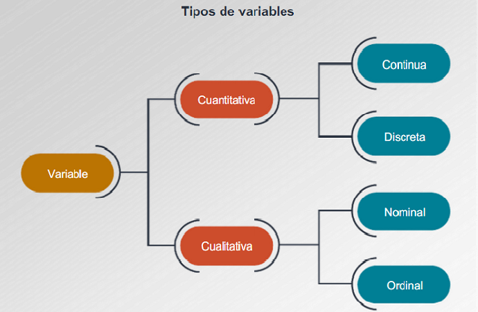

Variable estadística
Una variable estadística es cada una de las características o cualidades que poseen los individuos de una población.
Variable cualitativa
Las variables cualitativas se refieren a características o cualidades que no pueden ser medidas con números. Podemos distinguir dos tipos:
Variable cualitativa nominal:
Una variable cualitativa nominal presenta modalidades no numéricas que no admiten un criterio de orden. Por ejemplo:
El estado civil, con las siguientes modalidades: soltero, casado, separado, divorciado y viudo.
Variable cualitativa ordinal o variable cuasi cuantitativa:
Una variable cualitativa ordinal presenta modalidades no numéricas, en las que existe un orden. Por ejemplo:
- La nota en un examen: suspenso, aprobado, notable, sobresaliente.
- Puesto conseguido en una prueba deportiva: 1º, 2º, 3º, ...
- Medallas de una prueba deportiva: oro, plata, bronce.
Variable cuantitativa
Una variable cuantitativa es la que se expresa mediante un número, por tanto se pueden realizar operaciones aritméticas con ella. Podemos distinguir dos tipos:
Variable discreta
Una variable discreta es aquella que solo puede tomar un número finito de valores entre dos valores cualesquiera de una caraterística.
El número de hermanos de 5 amigos: 2, 1, 0, 1, 3.
Variable continua
Una variable continua es aquella que puede tomar un número infinito de valores entre dos valores cualesquiera de una caraterística.
La altura de los 5 amigos: 1.73, 1.82, 1.77, 1.69, 1.75.
En la práctica medimos la altura con dos decimales, pero también se podría dar con tres decimales.